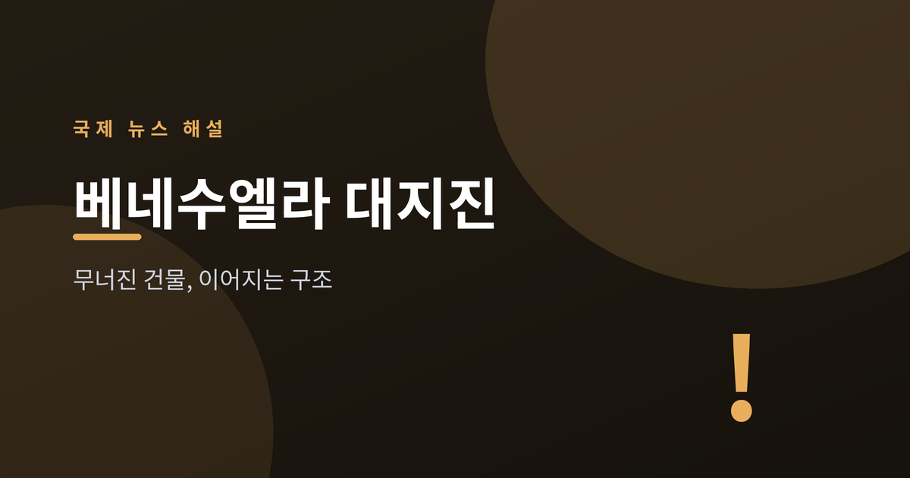
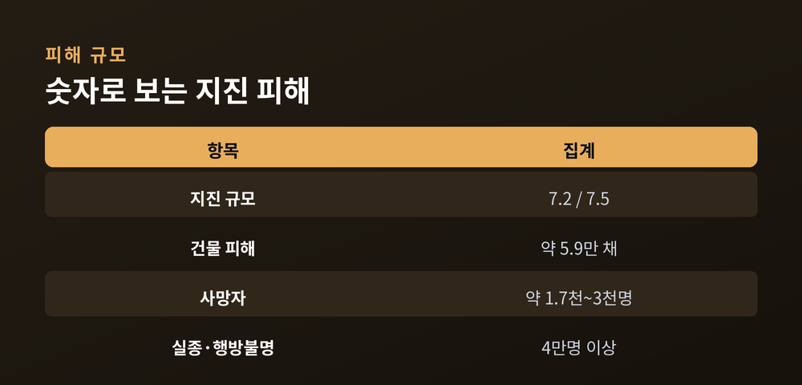
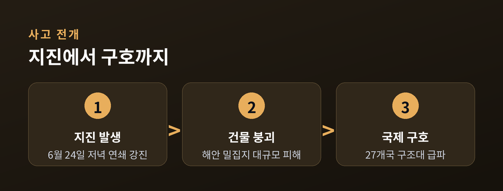
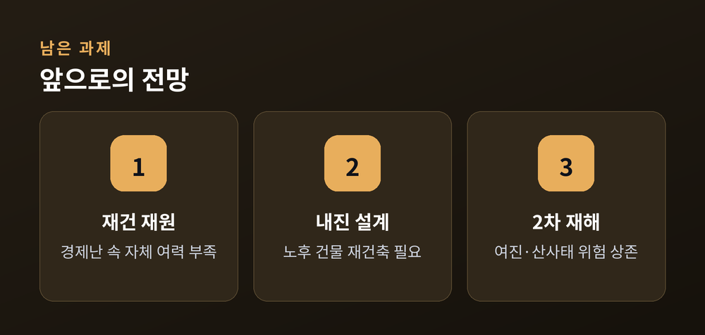

무너진 건물과 이어지는 구조

2026년 6월 24일 저녁, 베네수엘라 북부 해안 지역에서 두 차례의 강진이 잇따라 발생했습니다. 첫 번째는 규모 7.2, 그로부터 약 39초 뒤 규모 7.5의 본진이 뒤따랐습니다. 진앙은 서로 약 10km 떨어진 지점으로, 카라카스와 인근 항구도시 라과이라 일대에 큰 피해를 남겼습니다.
미 항공우주국(NASA)이 유럽우주국(ESA)의 센티넬-1 위성 레이더 영상을 분석한 결과, 카라바예다·마쿠토·나이과타·라과이라·카티아 라 마르 등 피해 지역에서 약 5만 8,870채의 건물이 손상되거나 붕괴됐을 가능성이 있는 것으로 나타났습니다. 다만 이는 신속 평가 자료로, 현장 검증을 거치지 않은 '피해 가능성 지표'라는 점을 NASA 측도 밝히고 있습니다.
인명 피해 집계는 매체와 시점에 따라 차이가 있습니다. UN 뉴스는 발생 며칠 뒤 사망자를 1,700명대로 전했고, 이후 NBC·CNN 등은 2,000명대 중반까지 늘었다고 보도했습니다. 7월 초 베네수엘라 정부 발표 기준으로는 사망자 약 3,000명에 근접, 부상자 1만 2,000명 이상, 실종·행방불명자는 4만 명 이상으로 집계되고 있습니다. 미국 지질조사국(USGS)은 자체 예측 모델을 통해 실제 사망자가 이보다 훨씬 많을 가능성도 배제하지 않고 있습니다.

이번 지진이 특히 심각한 피해로 이어진 배경에는 해안 저지대의 밀집 주거지가 있습니다. 라과이라 일대는 산비탈과 해안 사이 좁은 공간에 노후 건물이 밀집한 지역으로, 내진 설계가 충분하지 않은 건물이 많았던 것으로 알려졌습니다. 여기에 경제 위기로 오랫동안 인프라 투자가 지연되어 온 점도 피해를 키운 요인으로 지목됩니다.
국제사회의 대응도 빠르게 이뤄졌습니다. 델시 로드리게스 베네수엘라 대통령 권한대행은 사고 직후 국가비상사태를 선포했습니다. 미국은 함정과 수송기, 헬리콥터를 포함한 지원과 약 1억 5,000만 달러 규모의 원조를 약속했고, 브라질은 야전병원과 소방인력을, 중국은 구조팀과 의료 지원을, 튀르키예와 독일, 스위스 등도 각각 구조 인력과 장비를 파견했습니다. 27개국에서 모인 구조대원 2,000명 이상과 탐지견 160여 마리가 40여 개 팀으로 나뉘어 수색을 벌였습니다.
다만 일부 전문가들은 베네수엘라 정부의 재난 대응 역량이 충분하지 못했다고 지적하고 있습니다. 오랜 경제난 속에 행정 체계가 약화된 상태에서 대규모 재난까지 겹치며, 초기 구호 물자 전달과 정보 공개가 지연됐다는 비판도 나옵니다.

지진 발생 약 열흘이 지나면서 국제 구조팀 중 일부는 생존자 발견 가능성이 낮아졌다고 보고 철수를 준비하고 있습니다. 그럼에도 각지 임시 대피소에는 여전히 1만 명 이상이 머물고 있으며, 가장 피해가 큰 라과이라주에서만 6,000명 이상이 임시 캠프 생활을 이어가고 있습니다.
앞으로 관건은 장기 복구 재원 마련과 내진 재건축입니다. 베네수엘라는 오랜 경제 제재와 인플레이션으로 자체 재건 여력이 크지 않아, 국제사회의 지속적인 지원 여부가 복구 속도를 좌우할 전망입니다. 또한 여진 가능성과 우기철 산사태 등 2차 재해 위험도 남아 있어, 당분간 피해 지역 주민들의 불안한 상황이 이어질 것으로 보입니다.

피해 규모 요약
| 항목 | 집계 |
|---|---|
| 지진 규모 | 전진 7.2 / 본진 7.5 (39초 간격) |
| 건물 피해(위성 분석) | 약 5만 8,870채 손상·붕괴 가능성 |
| 사망자 | 약 1,700명~3,000명(집계 중, 매체·시점별 상이) |
| 실종·행방불명 | 4만 명 이상 |
| 임시 대피소 거주자 | 1만 명 이상(라과이라주 6,000명 이상) |
| 해외 구조 인력 | 27개국, 2,000명 이상 |